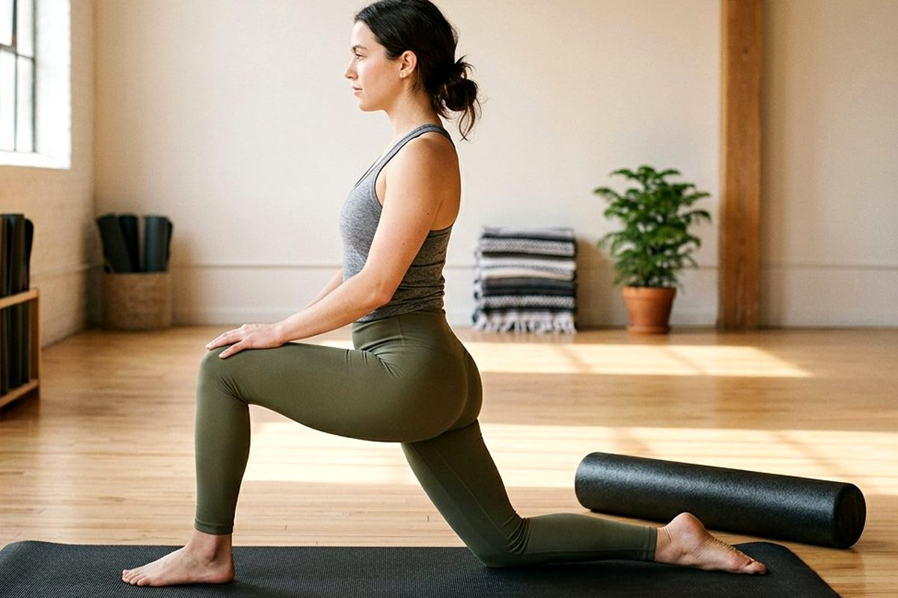

How to Do the Dead Bug (and Why It Beats Crunches)
Crunches flex your spine repeatedly and load it in the one direction most of us already spend all day loading. The dead bug does the opposite: it teaches your trunk to stay still while your arms and legs move — which is what your core actually does when you carry shopping, run, or pick up a child.
